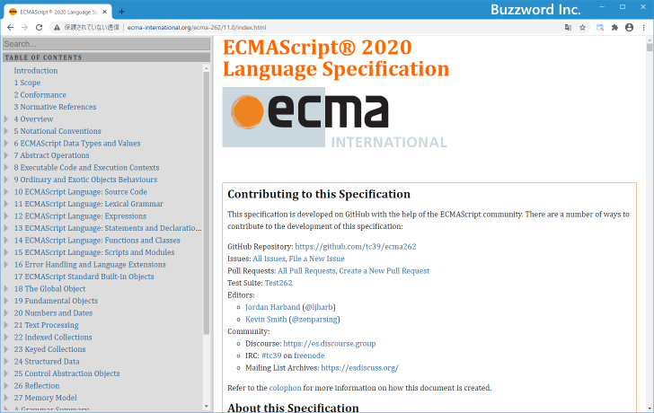

JavaScriptとECMAScriptの違い
JavaScript の基本部分の仕様を定めているのが ECMAScript です。ここでは JavaScript と ECMAScript の違いについて簡単に解説を行い、 ECMAScript として公開されている仕様へのリンクをご紹介します。
JavaScriptとは
JavaScript スクリプト言語のひとつで、 Netscape Communications 社によって開発されたプログラミング言語です。同社が開発していたブラウザ Netscape Navigator で動作しました。その後、マクロソフト社が開発しているブラウザ Internet Explorer でも動作するようになりますが、各社が独自の機能拡張を行っていたため互換性に問題がありました。
そこで JavaScript の標準化が行われるようになります。
ECMAScriptとは
JavaScript の標準化が行われ基本となる仕様が ECMAScript という名前で定められました。 ECMAScript は定期的に改定が行われています。 ECMAScript はあくまで基本部分の仕様であり、 ECMAScript で定められ基本た仕様に基づいて各社が実装を行ったものが JavaScript となります。 JavaScript では基本機能以外のブラウザ関係の機能などが加えられています。
ECMAScript は改定が行われるたびにバージョンが新しくなりますが、 JavaScript そのものに現在バージョンはありません。例えば ECMAScript 2019(ES2019) に準拠している JavaScript 、などのように区別されます。
ECMAScript のどのバージョンに対応しているのかはブラウザ毎によって異なります。また対応しているバージョンの中でも一部の機能は利用できないといったこともあります。 JavaScript で記述したコードを利用するブラウザが、コードで使用している機能を利用可能かどうかは注意する必要があります。
ECMAScriptのバージョン
ECMAScript のこれまでのバージョンは次の通りです。
| Edition | 略称 | 公開日 |
|---|---|---|
| ECMAScript 1 | ES1 | 1997年6月 |
| ECMAScript 2 | ES2 | 1998年6月 |
| ECMAScript 3 | ES3 | 1999年12月 |
| ECMAScript 4 | ES4 | 破棄 |
| ECMAScript 5 | ES5 | 2009年12月 |
| ECMAScript 5.1 | ES5.1 | 2011年6月 |
| ECMAScript 2015 | ES2015 / ES6 | 2015年6月 |
| ECMAScript 2016 | ES2016 / ES7 | 2016年6月 |
| ECMAScript 2017 | ES2017 / ES8 | 2017年6月 |
| ECMAScript 2018 | ES2018 / ES9 | 2018年6月 |
| ECMAScript 2019 | ES2019 / ES10 | 2019年6月 |
| ECMAScript 2020 | ES2020 / ES11 | 2020年6月 |
ECMAScript 2015 以降に公開された仕様については下記リンクを参照されてください。
・ECMAScriptR 2015 Language Specification
・ECMAScriptR 2016 Language Specification
・ECMAScriptR 2017 Language Specification
・ECMAScriptR 2018 Language Specification
・ECMAScriptR 2019 Language Specification
・ECMAScriptR 2020 Language Specification

なお JavaScript は当初はブラウザ上で動作する簡易なスクリプトを実行するために主に使われていましたが、現在ではサーバー上でも利用されるようになり、より広範囲な分野で利用される言語となっています。
-- --
JavaScript と ECMAScript の違いについて簡単に解説を行い、 ECMAScript として公開されている仕様へのリンクをご紹介しました。
( Written by Tatsuo Ikura )

著者 / TATSUO IKURA
初心者～中級者の方を対象としたプログラミング方法や開発環境の構築の解説を行うサイトの運営を行っています。